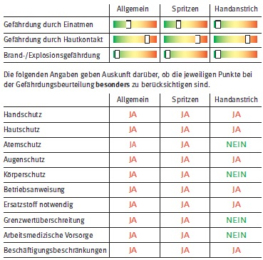

Beschichtungsstoffe, wasserbasiert, alkalisch, ätzend
GISCODE: BSW60
|
Beschichtungsstoffe, wasserbasiert, alkalisch, ätzend GISCODE: BSW60 |
|
Signalwort: Gefahr Gefahrenhinweise: Verursacht schwere Verätzungen der Haut und schwere Augenschäden. (H314) Sicherheitshinweise:Darf nicht in die Hände von Kindern gelangen. (P102) Vor Gebrauch Kennzeichnungsetikett lesen. (P103) BEI KONTAKT MIT DEN AUGEN: Einige Minuten lang behutsam mit Wasser spülen. Vorhandene Kontaktlinsen nach Möglichkeit entfernen. Weiter spülen. (P305+P351+P338) Ärztlichen Rat einholen/ärztliche Hilfe hinzuziehen. (P313) |
Charakterisierung
Ätzende, wasserbasierte Beschichtungsstoffe enthalten als Bindemittel Silikate, Pigmente, mineralische Füllstoffe, organische
Bestandteile (Kunstharzdispersionen) als Stabilisatoren und Wasser als Verteilungsmittel.
Diese Produkte werden vor allem als Wandfarben und im Außenbereich als Fassadenbeschichtungsstoff eingesetzt.
Gesundheitsgefahren gehen nach heutiger Kenntnis überwiegend von der ätzenden Wirkung aus.
Die im folgenden beschriebenen Gefahren und Maßnahmen beziehen sich auf die Bedingungen, unter denen das Produkt laut
Herstellerangaben verarbeitet werden soll.
Diese Information (incl. Betriebsanweisung) ist auch auf Putze und Spachtelmassen mit gleichartigen Inhaltsstoffen aufgrund
vergleichbarer Gefährdungen und Schutzmaßnahmen anwendbar.
Ersatzstoffe - Ersatzprodukte - Ersatzverfahren
Als Wandfarbe im Innenbereich können auch nicht ätzende Produkte (z.B. BSW10) eingesetzt werden. Informationen sind von den Herstellern zu erhalten.
Grenzwerte und Einstufungen
|
Allgemeiner Staubgrenzwert, einatembare Fraktion Lackaerosole |
Gefahrstoffmessungen/Ermittlung
Für das Spritzen von Beschichtungsstoffen gibt es keinen spezifischen Arbeitsplatzgrenzwert. Aus diesem Grund werden zur Beurteilung der Exposition die unter "Grenzwerte und Einstufungen" angegebenen Werte herangezogen. Erste orientierende Messungen zeigen, dass beide Grenzwerte nicht eingehalten werden. Eine Grenzwertüberschreitung im Handanstrich ist nicht zu erwarten.
Gesundheitsgefährdung
Eine Gefährdung durch Einatmen besteht bei Spritzverfahren. Verursacht Verätzungen, d.h. schädigt Atemwege, Augen und Haut bis zur Zerstörung.
Hygienemaßnahmen
Im Arbeitsbereich keine Lebensmittel aufbewahren sowie
weder essen, trinken, schnupfen noch rauchen!
Berührung mit Augen und Haut vermeiden!
Vorbeugend Hautschutzsalbe auftragen, um die Hautreinigung
zu erleichtern.
Produktreste von der Haut entfernen!
Nach Arbeitsende und vor Pausen Hände gründlich reinigen!
Hautpflegemittel nach der Arbeit verwenden (rückfettende
Creme).
Verunreinigte Kleidung sofort wechseln und erst nach deren
Reinigung wieder benutzen!
Nach Arbeitsende Kleidung wechseln!
Technische und organisatorische Schutzmaßnahmen
Gefäße nicht offen stehen lassen.
Waschgelegenheit im Arbeitsbereich vorsehen.
Augendusche oder Augenspülflasche bereitstellen.
Persönliche Schutzmaßnahmen
Augenschutz: Bei Spritzgefahr: Korbbrille.
Handschutz: Handschuhe aus: Naturlatex, Polychloropren,
Nitrilkautschuk. Beim Tragen von Schutzhandschuhen sind
Baumwollunterziehhandschuhe empfehlenswert.
Hautschutz: Für alle unbedeckten Körperteile fetthaltige
Hautschutzsalbe verwenden!
Atemschutz: Bei Spritzverfahren: Partikelfilter P2 (weiß)
Körperschutz: Bei Spritzverfahren: Einwegschutzanzug.
Erste Hilfe
Bei jeder Erste-Hilfe-Maßnahme: Selbstschutz beachten und
Arzt hinzuziehen!
Nach Augenkontakt: 10 Minuten unter fließendem Wasser bei
gespreizten Lidern spülen oder Augenspüllösung nehmen.
Immer Augenarzt aufsuchen!
Nach Hautkontakt: Verunreinigte Kleidung sofort ausziehen. Mit
viel Wasser und Seife reinigen. Keine Verdünnungs-/Lösemittel
o.ä. verwenden.
Nach Einatmen: Person an die frische Luft bringen.
Nach Verschlucken: Kein Erbrechen herbeiführen. Bei Bewusstsein
in kleinen Schlucken viel Wasser trinken lassen.
Handhabung
Reagiert mit Säuren unter Wärmeentwicklung (Spritzgefahr!).
Beschäftigungsbeschränkungen
Jugendliche ab 15 Jahren dürfen hiermit nur beschäftigt werden, wenn dieses zum Erreichen des Ausbildungszieles erforderlich und die Aufsicht eines Fachkundigen sowie betriebsärztliche oder sicherheitstechnische Betreuung gewährleistet ist.
Arbeitsmedizinische Vorsorge
Beim Tragen von Atemschutz ist eine Pflichtvorsorge zu veranlassen. Bei Atemschutzgeräten der Gruppe 1 nach AMR 14.2 ist lediglich eine Angebotsvorsorge anzubieten. Dazu gehören zum Beispiel: Filtergeräte mit Partikelfilter der Partikelfilterklassen P1 und P2 und partikelfiltrierende Halbmasken; gebläseunterstützte Filtergeräte mit Voll- oder Halbmaske; Druckluft-Schlauchgeräte und Frischluft-Druckschlauchgeräte, jeweils mit Atemanschlüssen mit Ausatemventilen.
Gefahrguttransport
Die Produktgruppe ist kein Gefahrgut im Sinne der GGVSEB.
Entsorgung
Nicht in Ausguss oder Mülltonne schütten.
Abfälle nicht vermischen! Zur ordnungsgemäßen Beseitigung
bzw. Rückgewinnung in beständigen, verschließbaren und
gekennzeichneten Gefäßen getrennt sammeln.
Restmengen sind unter Beachtung der örtlichen Vorschriften
einer geordneten Abfallbeseitigung zuzuführen! Folgende
EAK/AVV-Abfallschlüssel können in Frage kommen:
Flüssige Produktreste: 080120 wässrige Suspensionen, die
Farben oder Lacke enthalten, mit Ausnahme derjenigen, die
unter 08 01 19 fallen
Ausgetrocknete Produktreste: 080112 Farb- und Lackabfälle
mit Ausnahme derjenigen, die unter 08 01 11 fallen
Lagerung
Behälter vor Frost schützen!
Nur im Originalgebinde oder in vom Hersteller empfohlenen
Gebinden lagern.
Nach Umfüllen Behälter wie Originalgebinde kennzeichnen.
Nicht in Pausen-, Aufenthalts- oder Sanitärräumen sowie in
Treppenräumen, Fluren, Flucht- und Rettungswegen,
Durchgängen, Durchfahrten und engen Räumen lagern.
Schadensfall
Nach Verschütten mit saugfähigem Material (z.B. Kalkstein - mehl, Sand, Erde) aufnehmen, wie unter Entsorgung beschrieben behandeln und Reste mit viel Wasser wegspülen. Produkt ist nicht brennbar, im Brandfall Löschmaßnahmen auf Umgebung abstimmen. Das Eindringen in Boden, Gewässer und Kanalisation muss vermieden werden (schwach wasser - gefährdend - WGK 1).
Hinweise
Produkt-Code ist die Zuordnung von Produkten zu einer Produktgruppe; siehe Gebinde, Sicherheitsdatenblätter, Technische Merkblätter und Preislisten der verwendeten Produkte.
Als Lösemittel werden hier alle flüchtigen organischen Verbindungen mit einem Siedepunkt bei Normaldruck bis einschließlich 250°C bezeichnet.
Produkte, die dieser Produktgruppe zugeordnet sind, können im Einzelfall eine abweichende Kennzeichnung (Piktogramme, H/P-Sätze) oder abweichende sonstige Einstufungen (WGK, GGVSEB usw.) aufweisen.
Diese Produkt-/gruppen-Information unterstützt Sie bei der Durchführung der Gefährdungsbeurteilung nach §6 der Gefahrstoffverordnung und kann ggf. für Dokumentationszwecke verwendet werden.
Betriebsspezifische oder tätigkeitsbezogene Abweichungen oder Ergänzungen sind dann im Kapitel 'Gefährdungsbeurteilung' anzugeben.
Copyright by GISBAU 01.06.15
EErstellt nach Sicherheitsdatenblättern verschiedener Hersteller
und sonstigen Unterlagen.
Vervielfältigung erwünscht!
Hilfe bei der Gefährdungsbeurteilung
Orientierender Überblick zur inhalativen, dermalen und chemisch/physikalischen Gefährdung:

Gefährdungsbeurteilung
Die Tätigkeiten mit diesem Gefahrstoff werden entsprechend der Maßnahmen dieser GISBAU-Information durchgeführt. Im folgenden sind die betriebsspezifischen oder tätigkeitsbezogenen Ergänzungen und Abweichungen dokumentiert:
Gefährliche Eigenschaften:
Herstellerinformationen:
Physikalisch-chemische Wirkungen:
Substitutionsmöglichkeiten:
Arbeitsbedingungen:
Arbeitsplatzgrenzwerte/biologische Grenzwerte:
Wirksamkeit der Schutzmaßnahmen:
Schlussfolgerungen aus arbeitsmedizinischen Vorsorgeuntersuchungen:
Sonstiges: